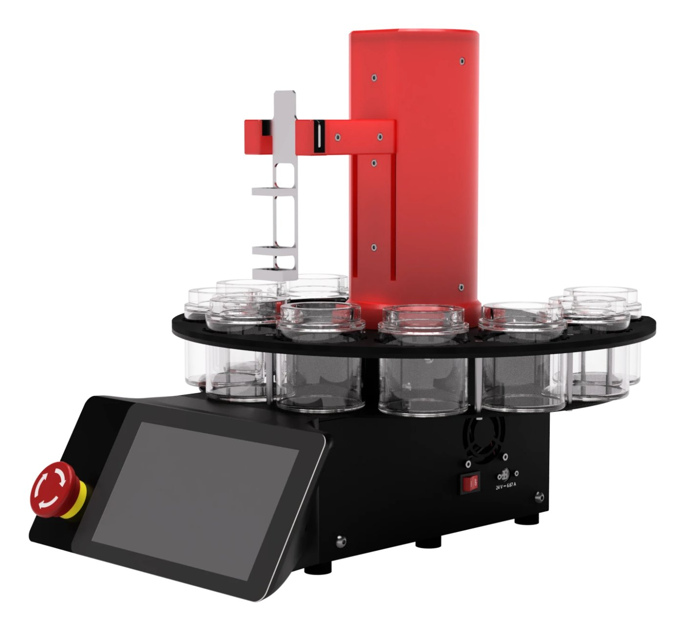
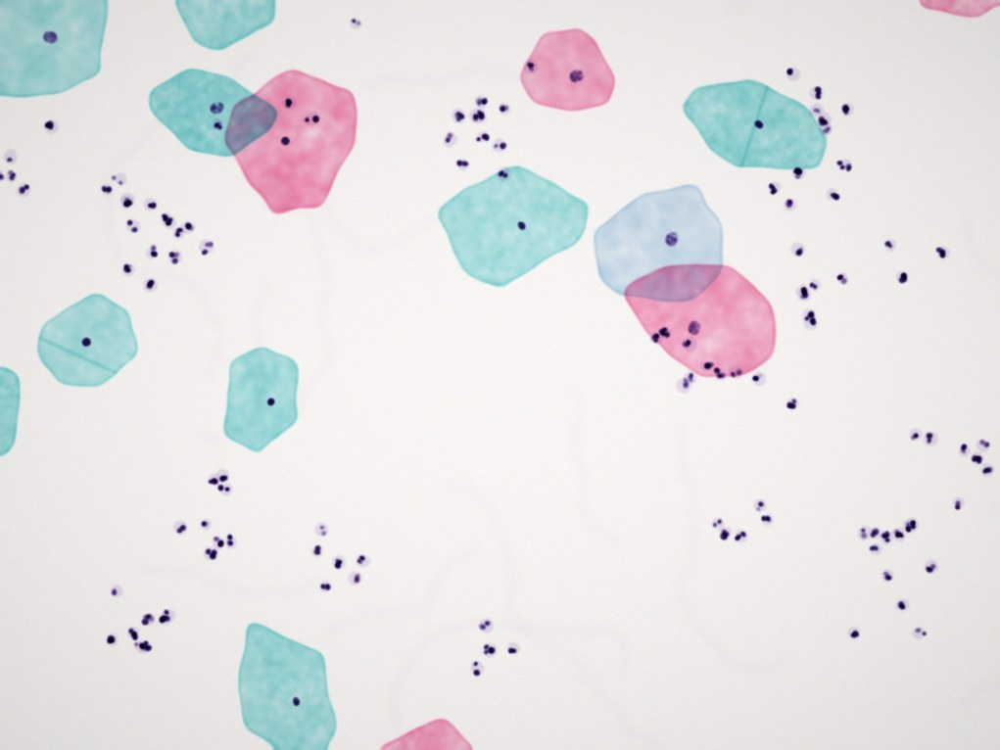

Our technologies
Automated staining, remote review and machine learning that enable lab-quality pathology in clinics without a laboratory or an on-site pathologist.
GyroStainer
A compact, low-cost automated stainer that stains slides consistently. It can stain traditional Pap smears and liquid-based cytology slides, and run H&E for histology or Giemsa for fine-needle aspiration cytology (FNAC). Research laboratories can also use it to run special stains or new research stains.
- 9glass reagent stations
- 1fan drying station
- 6slides per run

Our pre-validated Pap stain protocol
This is our pre-validated Pap stain protocol, specifically optimised for remote digital pathology. It is also adapted to low-resource settings: it uses xylene instead of NeoClear, and fan drying instead of high-percentage ethanol. Follow the full protocol below, sped up.
Six slides loaded
Telepathology portal
The portal is designed to connect each site with pathologists who review its slides remotely and return results quicker, without an on-site pathologist.
From stained slide to result
- DigitiseA digital microscope scans the stained slide into a high-resolution image.
- UploadThe image is uploaded to the portal automatically, with the clinical information needed for a diagnosis.
- Review and returnA remote pathologist reads the slide and sends the result and recommendation back to the clinic.
A simple interface
A preview of what a pathologist will see: pick a case, look closer at the slide, choose a result and send the report.
Cases to review

Case
- Code
- Age
- HPV test
- HIV status
- History
Who reads the slides
Slides are read by remote pathologists, and each programme chooses who they work with.
Local pathologists
Pathologists hired locally, from the main hospitals of the country, read the slides through the portal.
The UnaVix network
We provide a network of pathologists who read the slides for you.
Machine learning for cervical samples
With EPFL's Signal Processing Laboratory 5, we are developing an algorithm for cervical cytology samples that analyses every digitised slide and points the pathologist straight to the most suspicious cells.
- 1DivideThe digital slide is split into small tiles.
- 2AnalyseEvery cell in every tile is isolated and given an abnormality score.
- 3RankThe cells with the highest scores are flagged, up to 40 per slide.
- 4ReviewThe pathologist goes straight to the flagged cells and makes the diagnosis.
Early research figures. Once validated, the algorithm will be built into the portal at no extra cost to our partners.